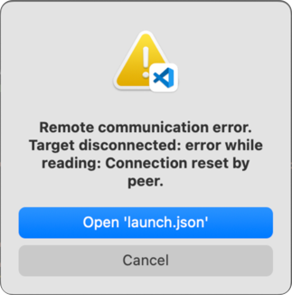

Troubleshooting
This chapter describes problems that might occur during debugging and how to solve them.
Loadable section outside of ELF segments
When downloading an AXF file built with Arm Compiler for Embedded, the following warning might appear and the application does not execute correctly. This happens regardless of the selected GDB server.
warning: Loadable section "RW_RAM0" outside of ELF segments
in /path/to/my/application.axf
Possible Reason: scatterloading issues
arm-none-eabi-gdb does not correctly load ELF program segments due to the way that Arm Compiler for Embedded generates
section and program header information when scatterloading is used.
Workaround: Generate a HEX file
Generate a HEX file for the program download, and the ELF file for debug purposes only.
Refer to the Project setup section for further details.
Broken debug illusion
When debugging ELF files with DWARF debug information of standard version 4 and earlier, arm-none-eabi-gdb generates the following warnings:
warning: (Internal error: pc 0x8006a18 in read in CU, but not in symtab.)
The debug illusion will be broken in many places.
Possible Reason: Missing DWARF5 debug information
arm-none-eabi-gdb works best with DWARF debug information of standard version 5.
Solution: Build the ELF file using DWARF5
Make sure to build your application ELF file with DWARF version 5 debug information.
Follow the steps explained in Project setup.
pyOCD port not available
When starting a debug session, you might see this error:

Possible reason: A running instance of pyOCD
This error might occur if a previous debug session has ended prematuerly and pyOCD has not exited. The orphaned instance will still keep the port open (usually 3333) and thus you won't be able to open the port again in the new session.
Solution: Check open files and kill pyOCD
On Linux and macOS you can check the running open files using the lsof command:
sudo lsof -i -n -P | grep 3333
Python 41836 user01 3u IPv4 0xa6ef66ad5be49a4f 0t0 TCP *:3333 (LISTEN)
pyocd 41842 user01 8u IPv4 0x9d09900145f3ca41
To kill the running pyOCD process, use:
sudo killall pyocd
On Windows systems, use the Windows Task Manager or the Process Explorer to find orphaned processes.